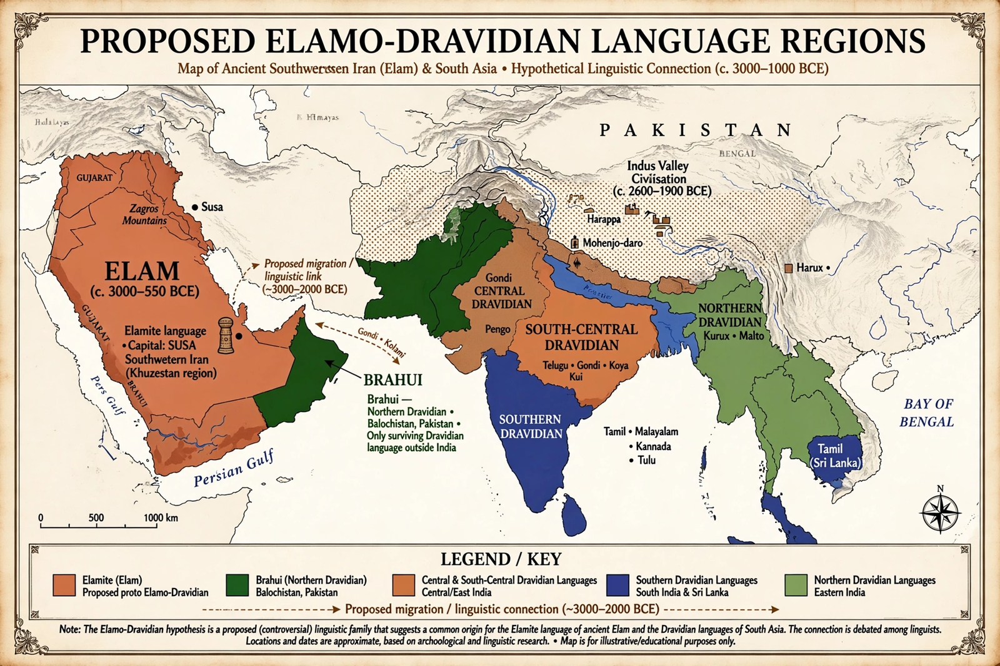

| Elamo-Dravidian | |
|---|---|
| Geographic distribution | South Asia and ancient southwestern Iran |
| Linguistic classification | Proposed language family |
| Subdivisions | Elamite; Dravidian |
| Status | Hypothetical; not generally accepted |

The Elamo-Dravidian language family is a hypothesised language family that links the Dravidian languages of India to the extinct Elamite language of ancient Elam (present-day southwestern Iran). Linguist David McAlpin has been a chief proponent of the hypothesis, arguing that similarities in morphology — such as second-person pronouns and case suffixes — point to a common ancestor.
McAlpin proposed that Elamite and Dravidian descend from a common "Proto-Elamo-Dravidian" language spoken perhaps in the region of the Indus Valley, which would also make the family a candidate link to the undeciphered script of the Indus Valley Civilisation. Supporters point to shared vocabulary for early agriculture and to structural parallels between the languages.
The hypothesis remains controversial. Many historical linguists regard the evidence as insufficient, noting that Elamite is poorly attested, that proposed cognates may be coincidental, and that the comparative method cannot securely reconstruct a proto-language from the available material. Most specialists therefore treat Elamite as a language isolate and Dravidian as an independent family.
See also: Elamite language · Dravidian languages · Indus script · Brahui language